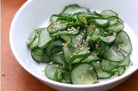

Sunomono

Description
Japanese sunomono is delicious and simple to make by marinating cucumbers in a sweet and sour vinaigrette for a refreshing salad or side dish
Ingredients
- 2 large cucumbers, peeled
- 1/3 cup rice vinegar
- 4 teaspoons white sugar
- 1 1/2 teaspoons minced fresh ginger root
- 1 teaspoon salt
Steps
- Cut cucumbers in half lengthwise and scoop out any large seeds. Slice crosswise into very thin slices.
- Place vinegar, sugar, ginger, and salt in a small bowl; mix well to combine. Add cucumber slices and stir to coat. Refrigerate for at least 1 hour before serving.